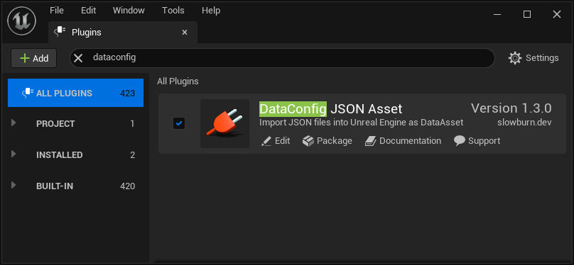
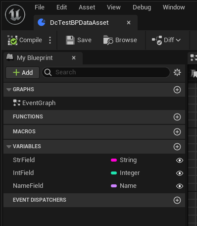
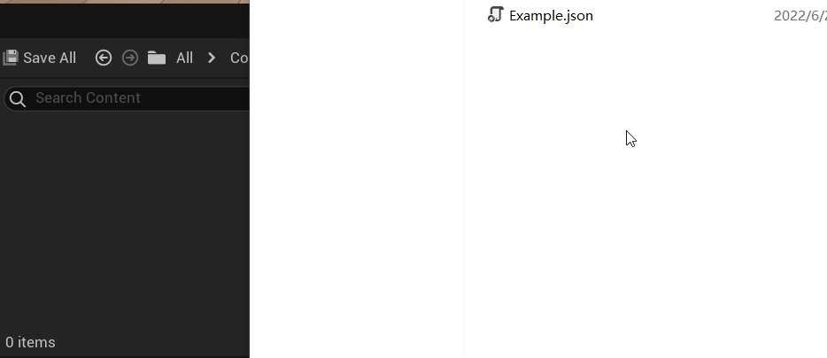
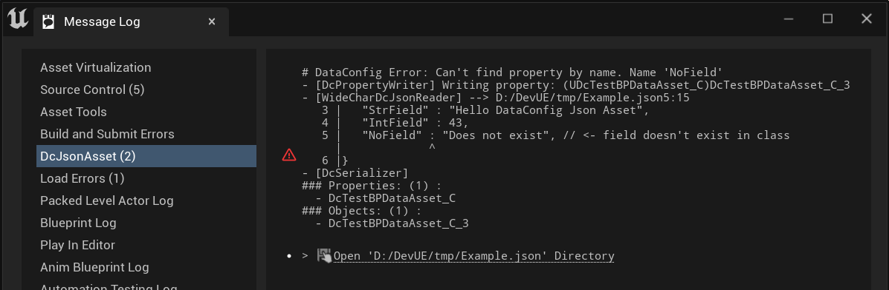
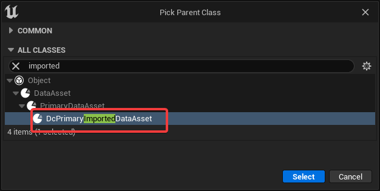
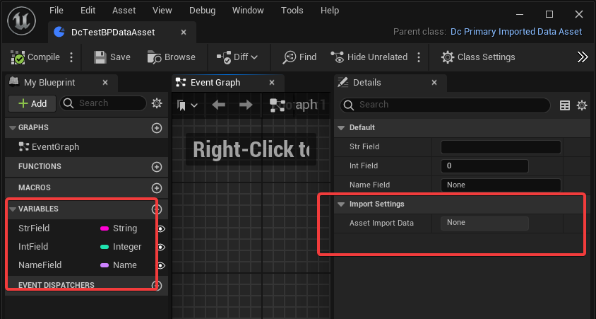
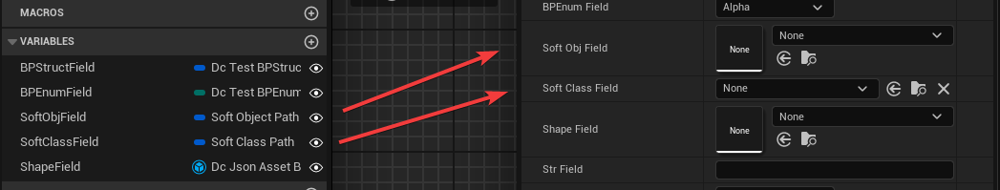
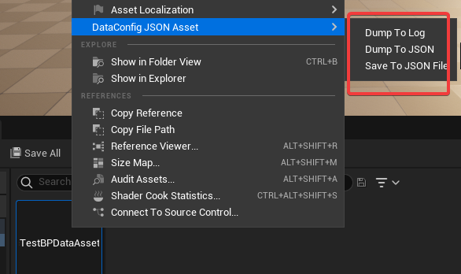
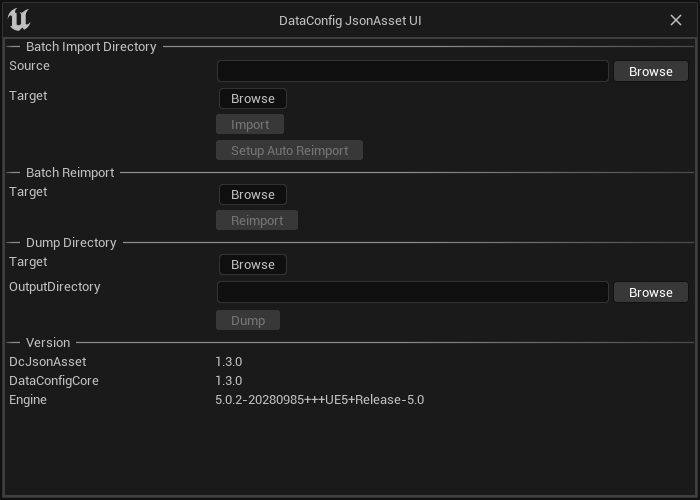

DataConfig JSON Asset Book
DataConfig JSON Asset (DcJsonAsset in short) is a UE plugin that does one particular thing:
Import JSON files into Unreal Engine as DataAsset
Notably features:
- Relaxed JSON parser that supports comments and trailing comma.
- Precise diagnostics on parse error.
- Batch import and reimport.
It's built on top of DataConfig, a serialization framework for Unreal Engine.
Getting Started
- Checkout our UE Marketplace page.
- See Tutorial for a quick guided tour.
- See Schema for supported JSON spec.
- See Changes for versioning history.
Tutorial
This page shows a quick demo of how to use DcJsonAsset.
-
First ensure that the plugin is properly integrated in your project. Open
Settings -> Pluginsand search for DataConfig JSON Asset:
-
We have bundled a simple Blueprint class
/DcJsonAsset/DcFixture/DcTestBPDataAsset.DcTestBPDataAsset:
It's almost equivalent to a C++ UCLASS like this:
UCLASS() class UDcTestBPDataAsset : public UDcPrimaryImportedDataAsset { GENERATED_BODY() public: UPROPERTY(EditAnywhere) FString StrField; UPROPERTY(EditAnywhere) int IntField; UPROPERTY(EditAnywhere) FName NameField; }; -
Open your text editor and copy in the JSON below, and save the file on disk:
{ "$type" : "/DcJsonAsset/DcFixture/DcTestBPDataAsset", "StrField" : "Hello DataConfig Json Asset", "IntField" : 43, } -
Then drop the file from the explorer into "Content Browser" and it's done.

-
Say we made a mistake when editing the JSON file:
{ "$type" : "/DcJsonAsset/DcFixture/DcTestBPDataAsset", "StrField" : "Hello DataConfig Json Asset", "IntField" : 43, "NoField" : "Does not exist", // <- field doesn't exist in class }Right click on the
Exampleasset and select reimport. DcJsonAsset would report this error in the "Message Log" window:
Integration
C++ Integration
The main entry point for C++ integration is the DcJsonAssetRuntime module. The most straight forward way to integrate is to add DcJsonAssetRuntime to your game module's Game.Build.cs:
using UnrealBuildTool;
public class DcProjectGame : ModuleRules
{
public DcProjectGame(ReadOnlyTargetRules Target) : base(Target)
{
// ...
PublicDependencyModuleNames.AddRange(new string[] {
"Core",
"CoreUObject",
"Engine"
"DcJsonAssetRuntime", // <-- add reference here
});
}
}
Then in your game module you can subclass UDcImportedDataAsset or UDcPrimaryImportedDataAsset to start structuring your data:
// DcJsonAssetTests/Private/DcTestImports1.h
UCLASS()
class UDcJsonAssetTestPrimaryDataAsset1 : public UDcPrimaryImportedDataAsset
{
// ...
UPROPERTY(EditAnywhere, Category="DcJsonAsset|Tests") FName AlphaName;
UPROPERTY(EditAnywhere, Category="DcJsonAsset|Tests") bool AlphaBool;
UPROPERTY(EditAnywhere, Category="DcJsonAsset|Tests") FString AlphaStr;
};
If you're already deriving UDataAsset in your projects and wants to adapt them to be importable, you can implement IDcImportedInterface interface and the editor tooling would be able to detect them automatically. This is actually how UDcImportedDataAsset and UDcPrimaryImportedDataAsset are implemented:
// DcJsonAssetRuntime/Public/DcImportedInterface.h
class DCJSONASSETRUNTIME_API IDcImportedInterface
{
// ...
#if WITH_EDITORONLY_DATA
virtual void GetAssetRegistryTags(TArray<UObject::FAssetRegistryTag>& OutTags) const = 0;
virtual UAssetImportData* GetAssetImportData() const = 0;
virtual void SetAssetImportData(UAssetImportData* NewAssetImportData) = 0;
#endif // WITH_EDITORONLY_DATA
};
// DcJsonAssetRuntime\Public\DcImportedDataAsset.h
UCLASS()
class DCJSONASSETRUNTIME_API UDcImportedDataAsset : public UDataAsset, public IDcImportedInterface
{
// ...
#if WITH_EDITORONLY_DATA
public:
void GetAssetRegistryTags(TArray<FAssetRegistryTag>& OutTags) const override;
UAssetImportData* GetAssetImportData() const override;
void SetAssetImportData(UAssetImportData* NewAssetImportData) override;
/** Importing data and options used for this asset */
UPROPERTY(VisibleAnywhere, Instanced, Category = ImportSettings)
class UAssetImportData* AssetImportData;
#endif // WITH_EDITORONLY_DATA
};
Blueprint Integration
We strongly recommend you author DataAsset classes in C++. It's more resilient and easier to debug this way. However Blueprint DataAsset, and Blueprint Enum/Struct etc are well supported and tested.
Create a Blueprint class and use DcPrimaryImportedDataAsset as base class:

The Blueprint Class can be used as a normal DataAsset. Note that the Asset Import Data is derived from the base class, which is needed for reimport and change detection.

Schema
This page documents the JSON schema that DataConfig JSON Asset supports. Note that DcJsonAsset shares most common deserialize handlers from DataConfigCore, which is documented here.
Root $type
The first thing when importing a JSON asset is to determine which class to deserialize into. It's specified by the $type field in the JSON source:
// DcJsonAsset/Tests/DcJsonFixture_Simple.json
{
"$type" : "DcJsonAssetTestPrimaryDataAsset1",
"AlphaName" : "Foo",
"AlphaBool" : true,
"AlphaStr" : "Bar"
}
We call all object keys with $ prefix meta fields. $type is one that's used a lot. Under the hood this $type field is handled separately from other fields:
$typemust be the first field in the object. In fact all meta fields are order significant and needs to start as the beginning keys of a object.$typevalues must refers to aUDcImportedDataAssetorUDcPrimaryImportedDataAssetchildren:- If it's a native C++ class, refer to it by the class name without the
Uprefix. For example:DcJsonAssetTestPrimaryDataAsset1 - If it's a Blueprint Class, refer to it by the Blueprint asset path.
For example:
/DcJsonAsset/DcFixture/DcTestBPDataAsset
- If it's a native C++ class, refer to it by the class name without the
Scalar Types
Most UE primitive types has pretty straight forward mappings to JSON data types:
| UE Type | JSON Type | Example |
|---|---|---|
| bool | Boolean | true, false |
| String, Name, Text | String | "Foo" |
| int, uint, float, double | Number | 123, 234.5 |
We additionally support a few scalar like data types:
Enums
Enum can be deserialized from a string. Enum flags needs to be deserialized from a list of string:
// DcJsonAssetTests/Private/DcTestImports2.h
UCLASS()
class UDcJsonAssetTestDataAsset1_Enum : public UDcImportedDataAsset {
// ...
UPROPERTY(EditAnywhere) EDcJsonAssetTestEnum_Simple EnumField;
UPROPERTY(EditAnywhere) EDcJsonAssetTestEnum_Flag EnumFlagField;
};
// DcJsonAsset/Tests/DcJsonFixture_Enum.json
{
"$type" : "DcJsonAssetTestDataAsset1_Enum",
"EnumField" : "Baz",
"EnumFlagField" : ["Alpha", "Gamma"],
}
GameplayTags
Gameplay Tag structs FGameplayTag and FGameplayTagContainer are both supported:
// DcJsonAssetTests/Private/DcTestImports2.h
UCLASS()
class UDcJsonAssetTestDataAsset2_GameplayTag : public UDcImportedDataAsset {
// ...
UPROPERTY(EditAnywhere) FGameplayTag GameplayTagField1;
UPROPERTY(EditAnywhere) FGameplayTag GameplayTagField2;
UPROPERTY(EditAnywhere) FGameplayTagContainer GameplayTagContainer;
};
// DcJsonAsset/Tests/DcJsonFixture_GameplayTag.json
{
"$type" : "DcJsonAssetTestDataAsset2_GameplayTag",
"GameplayTagField1" : "DcJsonAsset.Foo.Bar.Baz",
"GameplayTagField2" : null,
"GameplayTagContainer" : [
"DcJsonAsset.Foo.Bar",
"DcJsonAsset.Tar.Taz"
]
}
FPrimaryAssetId
FPrimaryAssetId is used to soft reference primary data assets. It's serialized into a Type:Name string, and can be loaded from the same string form, or a full object path:
// DcJsonAssetTests/Private/DcTestImports3.h
class UDcJsonAssetTestAssetTypes1 : public UDcPrimaryImportedDataAsset
{
// ...
UPROPERTY(EditAnywhere, Category="DcJsonAsset|Tests") FPrimaryAssetId AssetId1;
UPROPERTY(EditAnywhere, Category="DcJsonAsset|Tests") FPrimaryAssetId AssetId2;
UPROPERTY(EditAnywhere, Category="DcJsonAsset|Tests") FPrimaryAssetId AssetId3;
UPROPERTY(EditAnywhere, Category="DcJsonAsset|Tests") FPrimaryAssetId AssetId4;
};
// DcJsonAsset/Tests/DcJsonFixture_PrimaryAssetId.json
{
"$type" : "DcJsonAssetTestAssetTypes1",
"AssetId1" : null,
"AssetId2" : "/DcJsonAsset/DcFixture/DcTestBPDataAssetInstance",
"AssetId3" :
{
"$type" : "DcTestBPDataAsset",
"$name" : "DcTestBPDataAssetInstance"
}
}
Containers and Aggregates
UE containers mapping to JSON is also pretty unsurprising:
| UE Type | JSON Type | Example |
|---|---|---|
| Array, Set | Array | ["foo", "bar"] |
| Map, Struct, Class Root | Object | {"foo": "bar"} |
Object References
UE provides a few options when referencing UObject instances:
| Type | Example |
|---|---|
| Direct object reference | UObject*, AActor* |
| Soft object reference | TSoftObjectPtr<UObject>, TSoftClassPtr<UClass> |
| Lazy object reference | TLazyObjectPtr<UObject> |
| Weak Object Reference | TWeakObjectPtr<UObject> |
All of these are supported for completeness sake. The recommendation is:
- Use direct or soft object reference for common object references. It's the usual way to referencing objects.
- Use soft object reference when pointing to
UDcImportedDataAsset/UDcPrimaryImportedDataAssetderived classes. It's specially handled that it won't load the object to deserialize. This means we can batch import a set of JSON assets that references each other, without the need to resolve the mutual dependencies among them. The downside is that we don't check that the object actually exist at import time.
We allow a few options when referencing an object. Below is a example of object references:
// DcJsonAssetTests/Private/DcTestImports2.h
UCLASS()
class UDcJsonAssetTestDataAsset3_References : public UDcImportedDataAsset {
// ...
UPROPERTY(EditAnywhere) UObject* DirectRef1;
UPROPERTY(EditAnywhere) UObject* DirectRef2;
UPROPERTY(EditAnywhere) UObject* DirectRef3;
UPROPERTY(EditAnywhere) TSoftObjectPtr<UDcPrimaryImportedDataAsset> DcSoftImported1;
UPROPERTY(EditAnywhere) TSoftObjectPtr<UDcPrimaryImportedDataAsset> DcSoftImported2;
};
// DcJsonAsset/Tests/DcJsonFixture_Refs.json
{
"$type" : "DcJsonAssetTestDataAsset3_References",
"DirectRef1" : "Blueprint'/DcJsonAsset/DcFixture/DcTestBPDataAsset.DcTestBPDataAsset'",
"DirectRef2" : "/DcJsonAsset/DcFixture/DcTestBPDataAsset",
"DirectRef3" : {
"$type" : "Blueprint",
"$path" : "/DcJsonAsset/DcFixture/DcTestBPDataAsset"
},
"DcSoftImported1" : "/DcJsonAsset/DcFixture/DcTestBPDataAssetInstance",
"DcSoftImported2" : null
}
Note that:
DirectRef1/2/3are deserialized into identical references to the same object.DcSoftImported1/2are specially handled and/Path/To/Contentare the only format that's supported.
Blueprint classes can use FSoftObjectPath/FSoftClassPath to replace the templated C++ equivelent. It looks like this in the Blueprint editor:

Inline Sub Objects
UE already supports "Inline Sub Objects", that is UCLASS marked with DefaultToInstanced specifier. Editor would try to create new sub objects inline for these classes' references, rather than points to a existing one. It's also a way of doing data polymorphism in UE.
Given a simple class hierarchy like this:
// DcJsonAssetTests/Private/DcTestImports2.h
UCLASS(BlueprintType, EditInlineNew, DefaultToInstanced)
class UDcJsonAsset_BaseShape : public UObject
// ...
UPROPERTY(EditAnywhere) FName ShapeName;
};
UCLASS()
class UDcJsonAsset_ShapeBox : public UDcJsonAsset_BaseShape
// ...
UPROPERTY(EditAnywhere) float Height;
UPROPERTY(EditAnywhere) float Width;
};
UCLASS()
class UDcJsonAsset_ShapeSquare : public UDcJsonAsset_BaseShape
// ...
UPROPERTY(EditAnywhere) float Radius;
};
An asset can be loaded from a JSON like this:
// DcJsonAssetTests/Private/DcTestImports2.h
UCLASS()
class UDcJsonAssetTestDataAsset4_SubObjects : public UDcImportedDataAsset {
UPROPERTY(EditAnywhere) UDcJsonAsset_BaseShape* ShapeField1;
UPROPERTY(EditAnywhere) UDcJsonAsset_BaseShape* ShapeField2;
UPROPERTY(EditAnywhere) UDcJsonAsset_BaseShape* ShapeField3;
};
// DcJsonAsset/Tests/DcJsonFixture_SubObjects.json
{
"$type" : "DcJsonAssetTestDataAsset4_SubObjects",
"ShapeField1" : {
"$type" : "DcJsonAsset_ShapeBox",
"ShapeName" : "MyBox",
"Height" : 43,
"Width" : 25
},
"ShapeField2" : {
"$type" : "DcJsonAsset_ShapeSquare",
"Radius" : 16
},
"ShapeField3" : null
}
Instanced Struct
UE introduced FInstancedStruct with StructUtils plugin since 5.0 which implements lightweight polymorphic serialization. Given a struct hierarchy like this:
// DcJsonAssetTests/Private/DcTestImports3.h
USTRUCT(BlueprintType)
struct FDcJsonAssetTestStructShapeBase
{
// ...
UPROPERTY(EditAnywhere) FName ShapeName;
};
USTRUCT(BlueprintType)
struct FDcJsonAssetTestStructShapeRectangle : public FDcJsonAssetTestStructShapeBase
{
// ...
UPROPERTY(EditAnywhere) float Height;
UPROPERTY(EditAnywhere) float Width;
};
USTRUCT(BlueprintType)
struct FDcJsonAssetTestStructShapeCircle : public FDcJsonAssetTestStructShapeBase
{
// ...
UPROPERTY(EditAnywhere) float Radius;
};
An asset can be loaded from a JSON like this:
// DcJsonAssetTests/Private/DcTestImports3.h
UCLASS()
class UDcJsonAssetTestAssetInstancedStruct : public UDcPrimaryImportedDataAsset
{
GENERATED_BODY()
public:
UPROPERTY(EditAnywhere) FInstancedStruct Instanced1;
UPROPERTY(EditAnywhere) FInstancedStruct Instanced2;
UPROPERTY(EditAnywhere) FInstancedStruct Instanced3;
};
// DcJsonAsset/Tests/DcJsonFixture_InstancedStruct.json
{
"$type" : "DcJsonAssetTestAssetInstancedStruct",
"Instanced1" : null,
"Instanced2" :
{
"$type" : "DcJsonAssetTestStructShapeRectangle",
"ShapeName" : "MyBox",
"Height" : 3,
"Width" : 4
},
"Instanced3" :
{
"$type" : "DcJsonAssetTestStructShapeCircle",
"ShapeName" : "MyCircle",
"Radius" : 5
}
}
Other Root Meta Fields
In the root JSON object we now check for some other $meta fields.
$reimport-keep-instance
By default imported UDcImportedDataAsset object is destroyed and recreated on every import. Now $reimport-keep-instance changes the behavior and it would reuse the existing object. This is mostly for more advanced setups.
The main reason we create a new object on every import is that one can hardly reset the values of the dirty object. Consider the example below:
// DcJsonAsset/Tests/DcJsonFixture_Simple.json
{
"$type" : "DcJsonAssetTestPrimaryDataAsset1",
"AlphaName" : "Foo",
"AlphaBool" : true,
"AlphaStr" : "Bar"
}
// reimport with the new content below
// DcJsonAsset/Tests/DcJsonFixture_Simple_ReimportKeepInstance.json
{
"$type" : "DcJsonAssetTestPrimaryDataAsset1",
"$reimport-keep-instance" : true,
"AlphaStr" : "Changed"
}
After reimport the resulting object would be like this:
{
"AlphaName" : "Foo", // dirty value from last time
"AlphaBool" : true, // dirty value from last time
"AlphaStr" : "Changed" // new value in reimport
}
Tooling
The plugin also comes with a few supporting tooling and settings.
Settings
"DataConfig JsonAsset" settings can be found in "Project Settings" with the same name:
| Name | Usage |
|---|---|
| Suffixes | The file suffix that this plugin looks for. If you're already using .json suffix for other purposes you can add or change a new one. |
Console Commands
We also provide some handy commands that can be used for batch processing.
| Command | Example | Usage |
|---|---|---|
Dc.ImportDirectory | Dc.ImportDirectory "C:/Src/Dir" "/Game/Target" | Recursively import source directory into content |
Dc.ReimportDirectory | Dc.ReimportDirectory "/Game/Target" | Recursively reimport content directory |
Dc.SetupAutoReimport | Dc.SetupAutoReimport "C:/Src/Dir" "/Game/Target" | Setup Auto reimport entry in editor settings |
Dc.DumpDirectory | Dc.DumpDirectory "/Game" "C:/JsonOutput" | Recursively dump all DataAssets to JSON files |
Context Menu Actions
Right click on any asset and there's DataConfig JSON Asset sub menu:

| Name | Usage |
|---|---|
| Dump To Log | Dump selected assets to Output Log |
| Dump To JSON | Dump selected assets to Output Log as JSON |
| Save to JSON | Serialize selected assets as JSON and save to disk |
See caveats for dump details.
Tool UI
Finally we wrapped the commands above into a tooling panel, which can be found at "Windows -> JsonAsset Tool" menu:

Caveats
This page put together miscellaneous topics.
Unicode Handling
We decided to use FFileHelper::LoadFileToString to load files into FString instances, which handles the following encodings:
- UTF8 without BOM
- UTF8 with BOM
- UTF16 LE with BOM
- UTF16 BE with BOM
If you can choose an encoding we recommend use UTF8 without BOM across the board. You can setup an .editorconfigto enforce it.
Dump Assets
In the context menu we provide some shortcut actions for dumping arbitrary asset to textual presentation, which is a bit similar to UE's Export asset.
Dump to JSON sample output:
// /Game/Example
{
"$type" : "/DcJsonAsset/DcFixture/DcTestBPDataAsset",
"StrField" : "Hello DataConfig Json Asset",
"IntField" : 43,
"NameField" : "None"
}
Dump To Log sample output:
# Datum: 'BlueprintGeneratedClass', 'DcTestBPDataAsset_C'
<ClassRoot> 'DcTestBPDataAsset_C'
|---<Name> 'StrField'
|---<String> 'Hello DataConfig Json Asset'
|---<Name> 'IntField'
|---<Int32> '43'
|---<Name> 'NameField'
|---<Name> 'None'
|---<Name> 'AssetImportData'
|---<ClassRoot> 'AssetImportData'
| |---<Name> 'SourceFilePath'
| |---<String> ''
| |---<Name> 'SourceFileTimestamp'
| |---<String> ''
| |---<Name> 'SourceData'
| |---<StructRoot> 'AssetImportInfo'
| |---<StructEnd> 'AssetImportInfo'
|---<ClassEnd> 'AssetImportData'
|---<Name> 'AssetBundleData'
|---<StructRoot> 'AssetBundleData'
| |---<Name> 'Bundles'
| |---<ArrayRoot>
| |---<ArrayEnd>
|---<StructEnd> 'AssetBundleData'
|---<Name> 'NativeClass'
|---<ClassReference> 'DcTestBPDataAsset_C'
<ClassEnd> 'DcTestBPDataAsset_C'
We try to make sure the dump actions doesn't crash. When running into unrecognized properties it should fail with explicit error.
There's also batch process Dc.DumpDirectory that dumps all data assets. We've tested it against Lyra and CitySample project and it
have pretty readable output results. Note that currently we made minimal efforts to import the output JSON, but the current setup should've
covered most common cases.
Changes
All notable changes to this project will be documented in this file.
Version listed here should match with VersionName field in DcJsonAsset.uplugin
1.7.5 - 2025-11-30
- Integrate DataConfig 1.7.5
1.7.4 - 2025-4-23
- Integrate DataConfig 1.7.4
1.7.2 - 2024-11.27
- Integrate DataConfig 1.7.2
- Better
FTextdeserialization.
1.7.1 - 2024-11.13
- Integrate DataConfig 1.7.1
- Support for UE 5.5
1.6.1 - 2024-4.28
- Integrate DataConfig 1.6.1
- Integrate CoreTypes serializers.
- Support for UE 5.4
1.4.3 - 2023-9-10
- Integrate DataConfig 1.4.3
1.4.1 - 2023-5-13
- Integrate DataConfig 1.4.1
- Support
FInstancedStructproperty - Support for UE 5.2.
- Since this release DcJsonAsset only works with UE 5.0+.
- You can still get older versions from Epic store for older engines versions. And DataConfigCore still committed to work on UE 4.25+.
1.4.0 - 2022-11-17
- Integrate DataConfig 1.4
- Support for UE 5.1
1.3.0 - 2022-6-20
Checkout blog post "DataConfig Core and JSON Asset 1.3 Release".
-
NEW Dump data asset to JSON:
-
FIX Core change and fixes:
- Integrate DataConfig 1.3
- Support
FPrimaryAssetIdproperty - Support
FSoftObjectPath/FSoftClassPathproperty
-
NEW Docs:
-
KNOWN ISSUE:
- Some "DcJsonAsset" tests fail on UE 4.25/4.26 due to fixture assets are created in newer engine versions.
This doesn't affect actual usage though.
- Some "DcJsonAsset" tests fail on UE 4.25/4.26 due to fixture assets are created in newer engine versions.
1.2.2 - 2022-4-6
- Integrate DataConfig 1.2.2
- Support for UE 5.0.0
1.2.0 - 2022-1-26
- Integrate DataConfig 1.2.0
- Allow
/path/to/BlueprintinUClassfield positions - Added
$reimport-keep-instancemeta field. - Support Blueprint Enum.
1.1.1 - 2021-10-9
- Support UE 4.27
- Integrate DataConfig Core 1.1.1
- Show versions in JsonAsset tool widget.
1.1 - 2021-4-24
- Integrate DataConfig Core 1.1.0
- Fix UTF8 / UTF16 JSON file importing. Previously non ASCII characters are loaded as
?